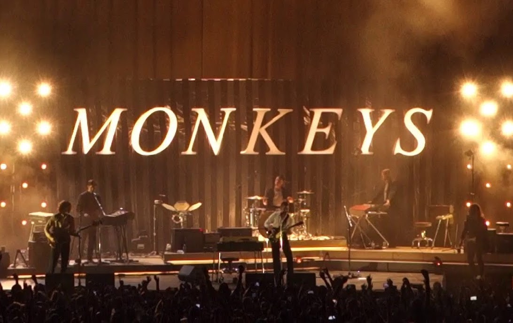

AM, by Arctic Monkeys

| AM: | |
|---|---|
| 1. | Do I Wanna Know? |
| 2. | R U Mine? |
| 3. | One For The Road |
| 4. | Arabella |
| 5. | I Want It All |
| 6. | No. 1 Party Anthem |
| 7. | Mad Sounds |
| 8. | Fireside |
| 9. | Why'd You Only Call Me When You're High? |
| 10. | Snap Out Of It |
| 11. | Knee Socks |
| 12. | I Wanna Be Yours |
About the Album:
AM is arguably, from end to end, the most complete album the Arctic Monkeys has released. AM was released in fall 2013 and I have been referring back to this album ever since. This album really tells a story of the wild nights the band has experienced as well as the surface level experiences that at times weigh on the mind. This album is a classic and a favorite of mine to jam to, especially while driving simply because the lyrics are so visual. It's almost impossible to decide which track from this record is my favorite but I would have to start with I Wanna Be Yours, followed by Arabella & No. 1 Party Anthem. Even as I type this my mind is screaming to bring up the dynamic songs Do I Wanna Know? & R U Mine?. If you want to hear some creative and imaginative lyrics, give those last two I mentioned a listen or read.
About the Artist:
Alex Turner, Jamie Cook, Nick O'Malley, and Matt Helders make up Arctic Monkeys. Alex Turner being the lead vocalist/guitarist/pianist and the most recognizable for the band. The band came together in 2002, and since their formation they have released 6 albums. Their latest album Tranquility Base Hotel and Casino took the imagination of AM and expanded that creativity throughout outerspace and didn't bring us back down. Arctic Monkeys are a dynamic and evocative group that are sure to continue to create great records for as long as they are able.
